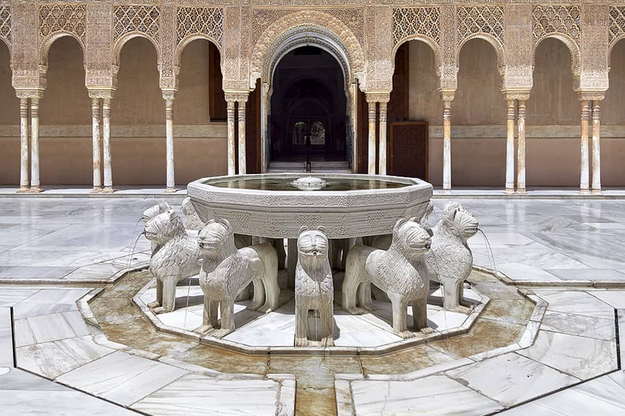
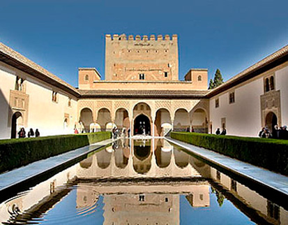
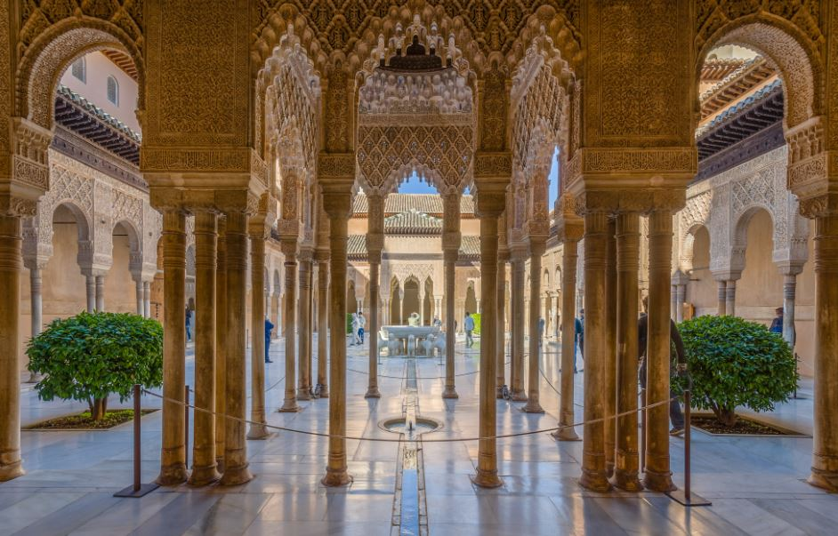

La historia de la Alhambra de Granada comenzó como una zona militar en el siglo IX, pero su verdadero esplendor arrancó en 1238, cuando Muhammad I, fundador de la dinastía nazarí, trasladó la corte a la colina de la Sabika. Allí inició la reconstrucción de la fortaleza y la creación de una sofisticada ciudad palatina que sirvió como residencia real, centro administrativo y cuartel. Durante el siglo XIV, bajo los reinados de Yusuf I y Muhammad V, el complejo alcanzó su máximo esplendor artístico y arquitectónico con la edificación de sus espacios más célebres, como el icónico Patio de los Leones y el Palacio de Comares.



La historia de la Alhambra de Granada comenzó como una zona militar en el siglo IX, pero su verdadero esplendor arrancó en 1238, cuando Muhammad I, fundador de la dinastía nazarí, trasladó la corte a la colina de la Sabika. Allí inició la reconstrucción de la fortaleza y la creación de una sofisticada ciudad palatina que sirvió como residencia real, centro administrativo y cuartel. Durante el siglo XIV, bajo los reinados de Yusuf I y Muhammad V, el complejo alcanzó su máximo esplendor artístico y arquitectónico con la edificación de sus espacios más célebres, como el icónico Patio de los Leones y el Palacio de Comares. Tras la toma de Granada en 1492 por los Reyes Católicos, la Alhambra pasó a manos cristianas, fascinando a los nuevos monarcas, quienes decidieron conservarla y adaptarla como residencia real. Posteriormente, el emperador Carlos V mandó construir su propio palacio renacentista dentro del recinto. Tras siglos de posterior abandono, expolio y daños sufridos durante la invasión napoleónica, el auge de los escritores románticos en el siglo XIX impulsó su recuperación. El complejo fue declarado Monumento Nacional en 1870 y, finalmente, Patio de la Humanidad por la UNESCO en 1984, consolidándose como uno de los monumentos históricos más visitados del mundo.